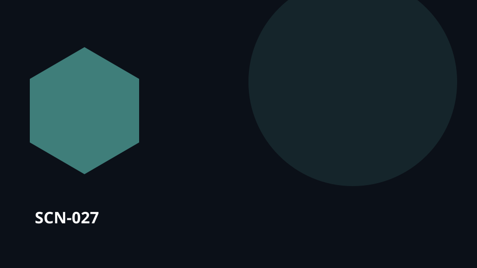

Point de départUn savoir qui doit être transmis

SCN-027 · Apprendre et transmettre
Un technicien doit enseigner une réparation qu’on ne peut pratiquer que deux fois par année
L’occasion réelle est trop rare pour apprendre par répétition. Chaque intervention devient donc capturée comme un cas, avec préparation, signes à reconnaître, décisions et preuves de réussite.
← Retour à la mosaïque complèteCe qui peut se perdre
Les connaissances restent attachées à une personne, un document ou une séance et se transmettent mal dans le temps.
Koali maintient le lien
La valeur ne vient pas d’une fonctionnalité isolée. Elle vient du fait de préserver le même contexte tout au long de intervention rare → … → prochaine intervention, afin que connaissances, personnes, choix, travail et mémoire restent reliés.
Déroulé
intervention rare → capture → simulation → pratique → évaluation → prochaine intervention
Transposable àmaintenance · services publics · métiers spécialisés